Steering/Suspension - Vehicle Pulls Left/Right
06-034May 2, 2009
Applies To:
ALL
*Vehicle Pulls or Drifts, and/or Steering Wheel Is Off-Center
(Supersedes 06-034, Vehicle Pulling or putting, dated October 16, 2007, to revise the information marked by asterisks)
(Replaces 90-007, Steering Wheel Off-Center Adjustment at TQI)*
*REVISION SUMMARY
The title description was revised.*
SYMPTOM
While driving on a straight road, the vehicle pulls or drifts to the right or the left.
BACKGROUND
New tools were developed to help you diagnose and correct a pulling and/or steering wheel off-center issue. There is a diagnosis worksheet included to take on your test-drive and record your findings. These values are used to build the 15-digit DTC (diagnostic trouble code) that is required for your warranty claim. The last step in each repair procedure helps you create the correct code.
In the rare case that you have to repair a vehicle that pulls and has the steering wheel off-center, use REPAIR PROCEDURE B to file your warranty claim.
For more information, refer to Training Module SSC 44 - Steering Drift or Pull Interactive Service Bulletin.
PROBABLE CAUSES
Several conditions can cause the vehicle to pull or drift:
^ Wheel alignment
^ Tires
^ Off-center steering wheel (no pulling or drifting, but a client may believe this is the case)
CORRECTIVE ACTION
Diagnose the problem using the special tools and the worksheet that guides you to one of four repair procedures.
TOOL INFORMATION
Centering Tape (enough
to diagnose 240 vehicles): T/N O7AAJ-001A300
Steering Drift Set Level: T/N 07AAJ-001~00
Steering Drift Set: T/N O7MJ-001A140
Replacement Weight
for Steering Drift Set: T/N 07AAJ-001A400
WARRANTY CLAIM INFORMATION
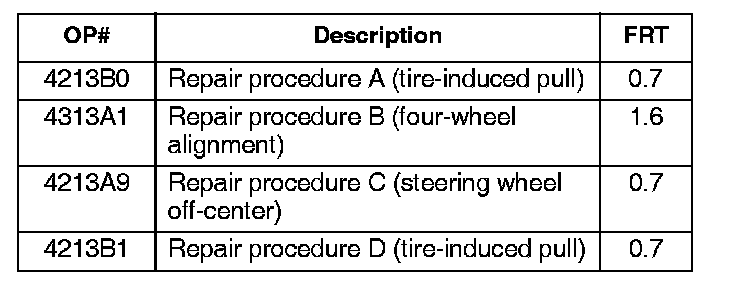
In warranty:
The normal warranty applies.
Failed Part: P/N 53560-SDA-A01
Defect Code: 07406
Symptom Code: 03602
Skill Level: Repair Technician
Diagnostic Trouble To create the 15-digit DTC, see
Code: the applicable repair procedure.
Out of warranty:
Any repair performed after warranty expiration may be eligible for goodwill consideration by the District Parts and Service Manager or your Zone Office. You must request consideration, and get a decision, before starting work.
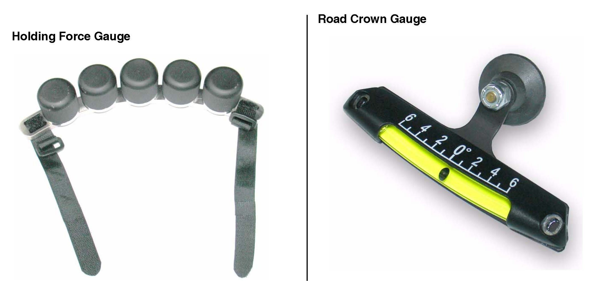
TOOL DESCRIPTIONS
The holding force gauge measures the amount of pull on the vehicle. It is a bracket that counts as one weight, plus five removable weights.
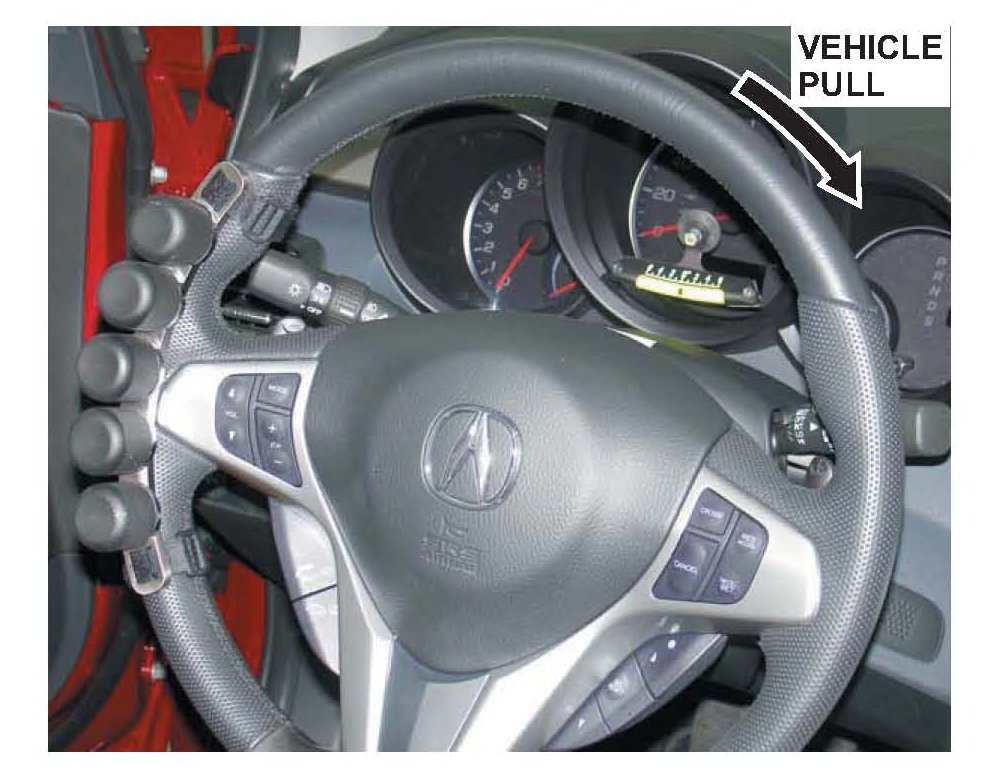
During the test-drive, attach the bracket and the weights to the steering wheel on the side opposite the pulling direction. For example, if the vehicle pulls to the right, attach the bracket and weights to the left side of the steering wheel. Start with the maximum amount of weight on the steering wheel, and remove the weights until the vehicle drives in a straight line.
When recording the pull on the worksheet, write down the direction of the pull (left or right) and the number of weights required to balance the pull (one through six). For example, you have the bracket and two weights on the steering wheel. Record this as three weights.
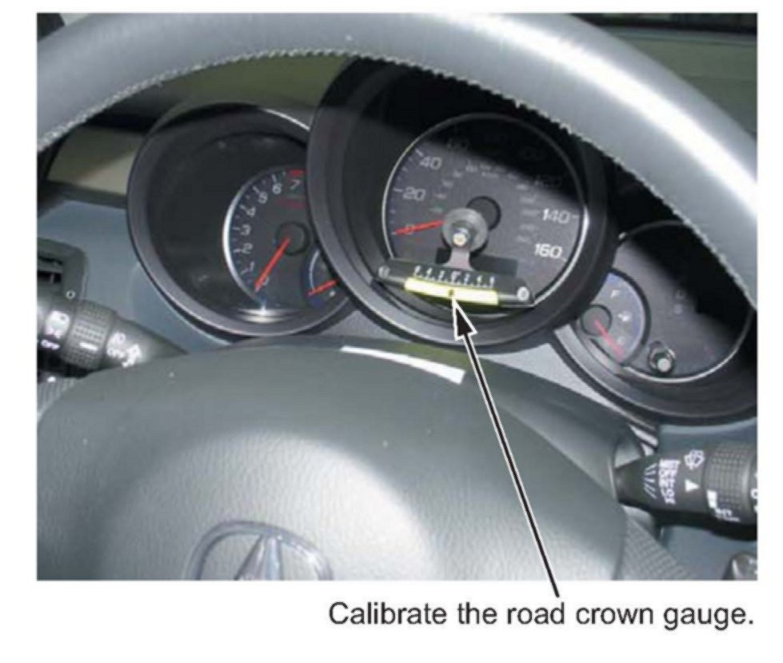
NOTE:
The bracket counts as one weight.
The road crown gauge measures the amount of road crown. Almost all roads have a crown to help drain water during rainstorms. Use the suction cup to attach the road crown gauge bracket to the vehicle in a vertical position. If necessary, bend the bracket until the gauge is vertical. Once you attach and align the road crown gauge, calibrate the gauge to zero. There are two ways to calibrate the gauge:
^ Park the vehicle on a level surface, such as an alignment rack, and calibrate the gauge by moving the gauge until the ball is on the zero mark.
^ If you do not have a perfectly flat surface, park the vehicle on a reasonably flat surface and note the gauge reading. Turn the vehicle 1800 and, with the tires in the same spot, note the new gauge reading. Then move the gauge half of the difference. Example: Your first reading is +3 and, after moving the vehicle, the gauge reads -1. The difference is 4 degrees. Position the gauge to read +1.
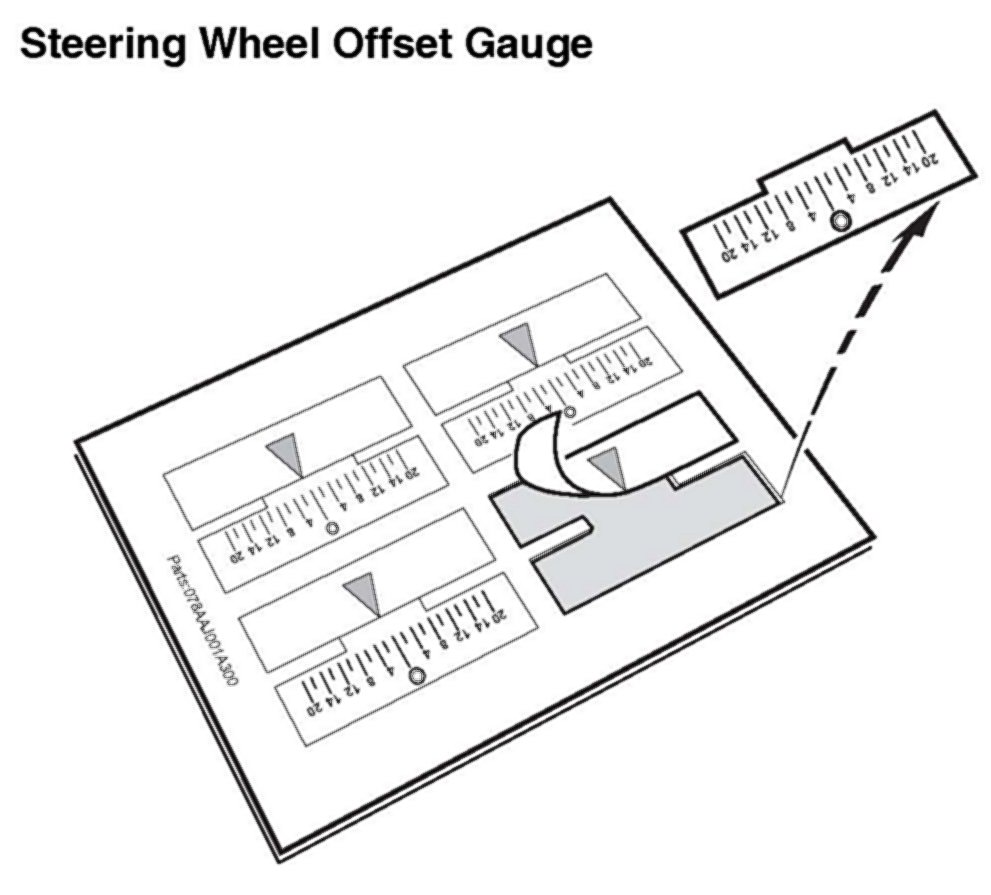
NOTE:
You must calibrate the gauge with the same weight in the vehicle that you will use for the test-drive. If you plan to have an assistant help you during the test-drive, calibrate the gauge while both of you are sitting in the vehicle.
Steering Wheel Offset Gauge
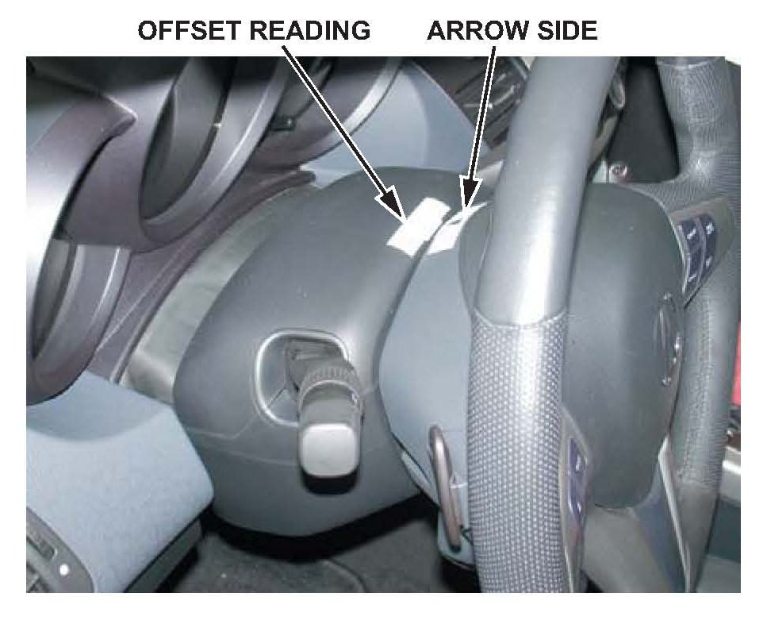
The steering wheel offset gauge is a sticker that attaches to the steering wheel and the steering column cover. Place the sticker on the steering wheel when the steering wheel is straight. When you test-drive the vehicle, you can read how many millimeters the steering wheel is off-center.
If the vehicle is pulling, repairing the pull may correct the steering wheel offset.
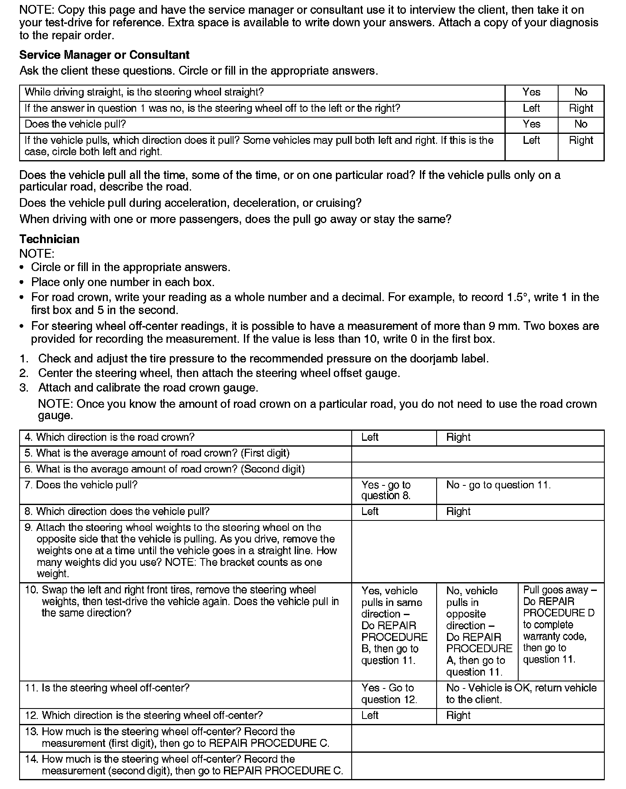
DIAGNOSTIC WORKSHEET
REPAIR PROCEDURE A
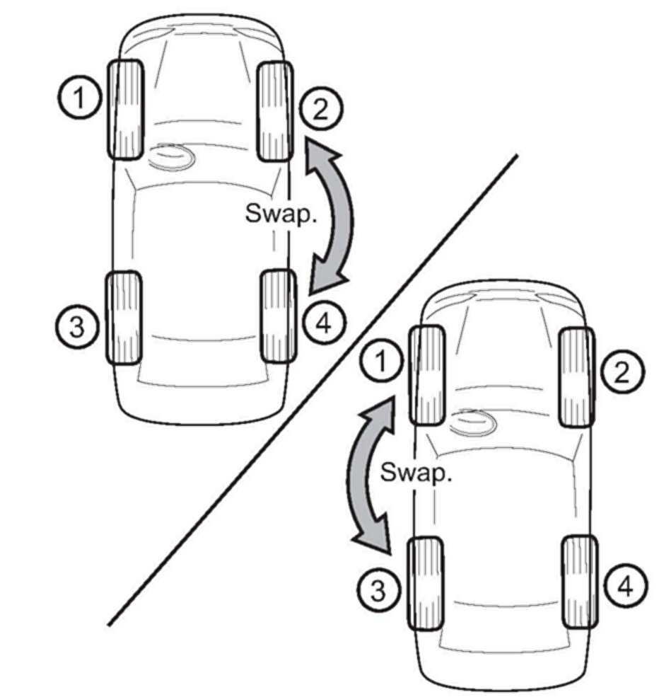
NOTE:
Do this repair procedure if, after doing step 10 of the test-drive, the vehicle pulled in the opposite direction after you swapped the front tires.
1. Swap wheels 2 and 4 on the passenger's side of the vehicle, and test-drive again.
^ If the pull goes away, replace the tire on wheel 2, then go to step 3.
^ If the pull does not go away, put wheels 2 and 4 back to their original positions, and go to step 2.
2. Swap wheels 1 and 3 on the driver's side of the vehicle, and test-drive again.
^ If the pull goes away, replace the tire on wheel 1, then go to step 3.
^ If the pull does not go away, use a known-good tire in position 1 and continue the diagnosis.
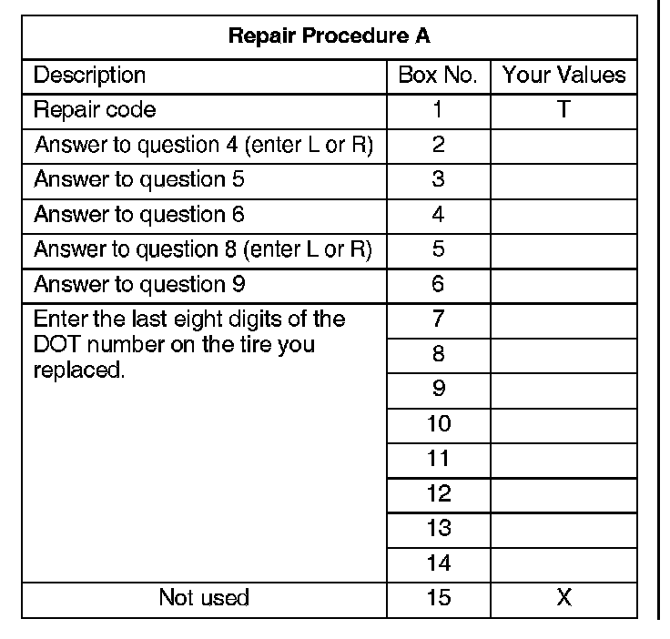
3. Use your diagnostic worksheet to fill in the following table and build your 15-digit DTC.
REPAIR PROCEDURE B
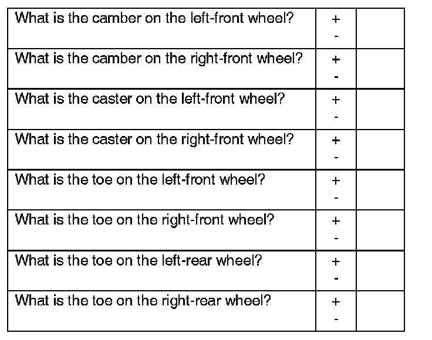
1. Place the vehicle on a commercially available, computerized four-wheel alignment rack, and record the following measurements. Follow the equipment manufacturer's instructions.
NOTE:
Enter each reading in decimal degrees. Example 30' = 0.50.
2. If any measurement is out of specification, inspect the suspension for any damage. Repair any damaged parts before continuing your diagnosis.
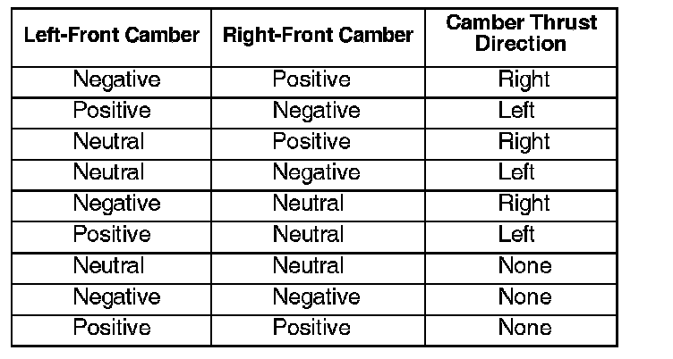
3. Determine how the front wheel camber is affecting the pull. Pick the combination of left- and right-front camber that best matches the vehicle you are repairing, then note the camber thrust direction for that combination:
NOTE:
^ If the camber of both front wheels is negative, but one wheel is grossly more negative than the other, the camber thrust direction will be opposite the wheel with more negative camber (for example, if the left-front wheel is more negative, the camber thrust direction is right).
^ If the camber of both front wheels is positive, but one wheel is grossly more positive than the other, the camber thrust direction will be the same as the wheel with more positive camber (for example, if the left-front wheel is more positive, the camber thrust direction is left).
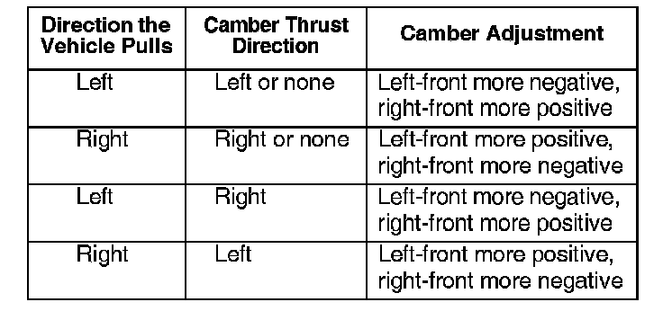
4. Determine how the camber needs to be adjusted.
5. Adjust the camber as needed.
Front Camber Adjustment, Double Wishbone Suspension
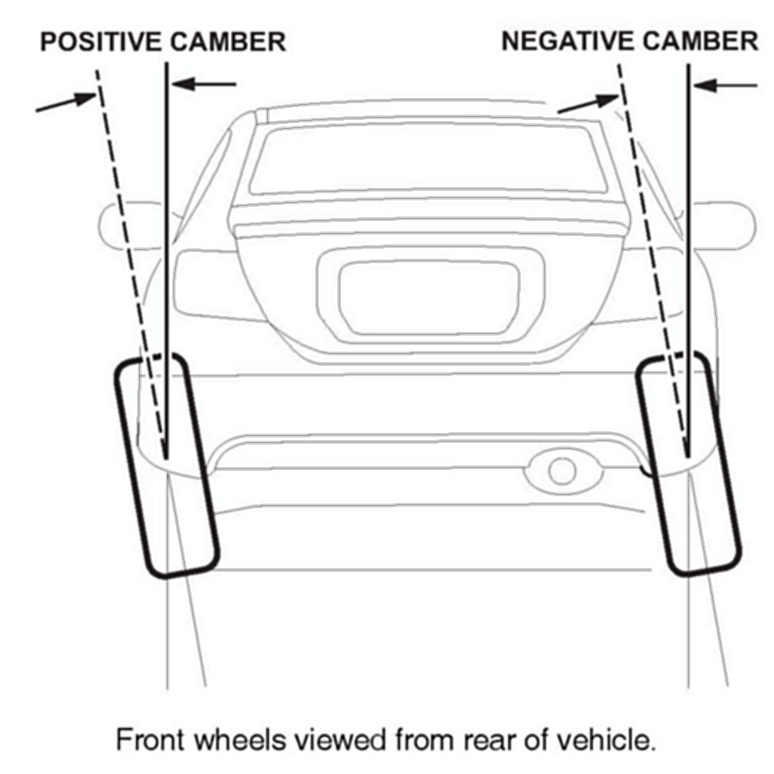
^ Loosen the front subframe bolts. See the applicable service manual for more information.
^ Depending which way you need to shift the subframe, insert a pry bar between the subframe and body at both the front and rear positions of the subframe.
NOTE:
Be careful not to damage the vehicle. You could bend and damage the frame and/or body if you apply too much pressure.
^ Press on both pry bars to shift the subframe. It will move only a few millimeters. This should adjust the camber about 0.2-0.5°.
^ While holding the subframe in place, have an assistant torque the subframe bolts to their proper torque.
Camber Adjustment, Strut Suspension
^ Raise the vehicle, and remove the front tires.
^ Loosen the damper pinch bolts and the flange nuts.
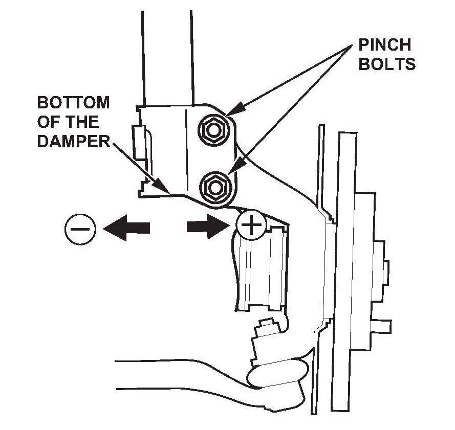
^ Adjust the camber by moving the bottom of the damper within the range of the damper pinch bolt free play.
NOTE:
Some vehicles have special pinch bolts that allow more adjustment. For more information, refer to the parts catalog.
^ Tighten the damper pinch bolts to the specified torque.
^ Reinstall the front wheels, and lower the vehicle. Bounce the front of the vehicle several times to stabilize the suspension.
6. Test-drive the vehicle to make sure it no longer pulls. If the steering wheel is now off-center by more than 2 mm, go to REPAIR PROCEDURE C.

7. Use your diagnosis worksheet to fill in the table and build your 15-digit DTC.
NOTE:
Enter each reading in decimal degrees. Example 30' = 0.50.
REPAIR PROCEDURE C
1. Make sure the steering wheel is centered.
^ Turn the steering wheel all the way to the right until it stops.
^ Turn the steering wheel all the way to the left, and count the number of revolutions until it stops.
^ Divide the number of revolutions in half, and turn the steering wheel until it is centered. For example, if it takes four revolutions of the steering wheel to go from lock to lock, two turns is centered.
^ If the steering wheel is off-center by a large amount (20 mm or more), it may not be centered on the steering column shaft. Reinstall the steering wheel before going to step 2.
2. Place the vehicle on a lift, turn the steering wheel until it is centered, then raise the vehicle.
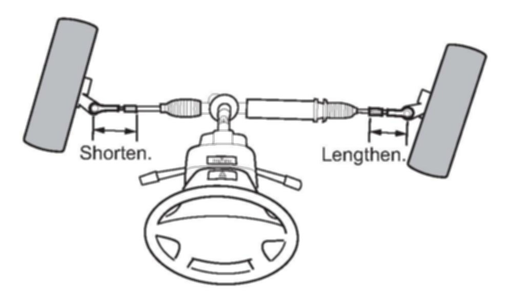
3. Adjust the tie-rods. Use your measurements from questions 13 and 14 of the test-drive to make your adjustment.
^ If the wheels are pointed to the right, shorten the driver's side tie-rod, and lengthen the passenger's side.
^ If the wheels are pointed to the left, shorten the passenger's side tie-rod, and lengthen the driver's side.
^ Each 3600 turn of the tie-rod equals about 8 mm of steering wheel adjustment. For example, a steering wheel is off-center by 4 mm, with the front wheels pointed right (when the steering wheel is centered). To correct the off-center, shorten the driver's side tie-rod by a half-turn, and lengthen the passenger's side tie rod by a half-turn.
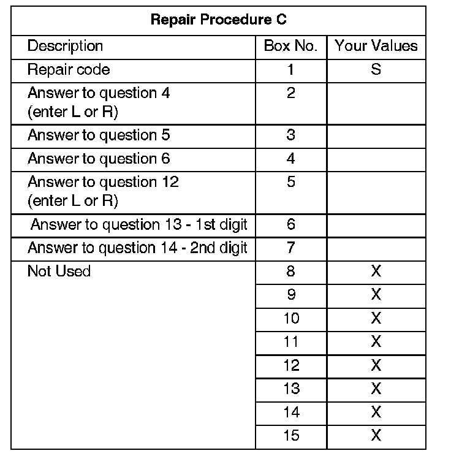
4. Use your diagnosis worksheet to fill in the table and build your 15-digit DTC.
REPAIR PROCEDURE D
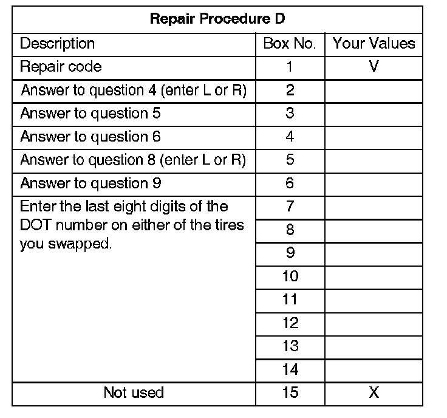
Repair is complete. Use your diagnosis worksheet to fill in the following table and build your 15-digit DTC.